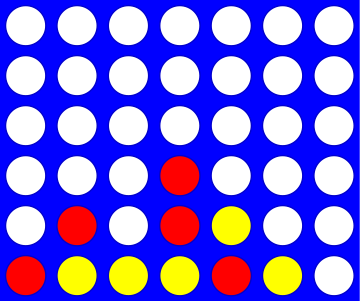

Vier op een rij: de klasse Board¶
Naam |
Vier op een rij |
|---|---|
Onderwerp |
Een eerste kunstmatige intelligentie |
Bestandsnaam |
|
Inleveren |
Lever jouw bestand met de juiste bestandsnaam in op GradeScope |
Punten |
25 |
Opmerking |
Dit is een bonusopgave |
Voor deze opgave moet je met een nieuw bestand wk10ex2.py beginnen.
Vier op een rij is een variant van Boter, kaas en eieren dat gespeeld wordt op een rechthoekig bord van 7 bij 6:

Het spel wordt gespeeld door twee spelers, die om de beurt een zet doen, waarbij beide spelers proberen om vier stenen op een verticale, horizontale of diagonale rij te krijgen. Eén voorwaarde bij het spelen is dat, omdat het bord verticaal opgesteld staat, de stenen niet zomaar overal geplaatst kunnen worden. Een stee mag alleen maar bovenaan een bestaande kolom stenen gespeeld worden (of het mag een nieuwe kolom stenen beginnen).
De klasse Board¶
In deze opgave ga je een klasse genaamd Board maken die sommige eigenschappen van het spel Vier op een rij implementeert. De klasse Board heeft drie instantievariabelen: er is een tweedimensionale lijst (een lijst van lijsten) met karakters die het spelbord voorstelt, en twee variabelen die het aantal rijen en kolommen op het bord bijhouden (6 rijen en 7 kolommen is standaard, maar je klasse Board kan elk formaat bord aan).
Zelfs als we onbeperkt grote borden toestaan blijft de regel echter bestaan dat je vier stenen op een rij nodig hebt om te winnen. Toegegeven, dit maakt het wel lastig om het spel te winnen op een bord van 3 bij 3…
Je klasse Board heeft minstens drie instantievariabelen:
Een variabele met de naam
datawaarin de tweedimensionale array (lijst van lijsten) met het spelbord wordt opgeslagenEen variabele
heightwaarin het aantal rijen op het bord wordt opgeslagenEen variabele
widthwaarin het aantal kolommen op het bord wordt opgeslagen
Merk op dat de tweedimensionale lijst een tweedimensionale lijst van karakters is; dit zijn gewoon strings van lengte 1. Je moet een leeg veld laten voorstellen door ' ', een spatieteken; niet de lege string. Je moet de stenen van speler X laten voorstellen door een 'X' (de hoofdletter x) en je moet de stenen van speler O laten voorstellen door een 'O' (de hoofdletter o).
Waarschuwing
Een heel moeilijk te vinden bug treedt op als je het nulteken '0' gebruikt in plaats van het teken 'O' (hoofdletter o) om één van de spelers voor te stellen. Het probleem treedt op als door jou, of tijdens het nakijken, de waardes in het bord vergeleken worden met de verkeerde karakters! Zorg ervoor dat je consistent bent in het gebruik van de hoofdletter o.
Je moet een aantal methodes implementeren in de klasse Board. Vergeet niet de tips over hoe je ze kan testen te gebruiken nadat je ze geschreven hebt! De eerste twee methodes zijn in het college behandeld en zijn hieronder gegeven zodat je ze kan kopiëren en plakken.
class Board:
"""A data type representing a Connect-4 board
with an arbitrary number of rows and columns.
"""
def __init__(self, width, height):
"""Construct objects of type Board, with the given width and height."""
self.width = width
self.height = height
self.data = [[' ']*width for row in range(height)]
# We hoeven niets terug te geven vanuit een constructor!
def __repr__(self):
"""This method returns a string representation
for an object of type Board.
"""
s = '' # de string om terug te geven
for row in range(0, self.height):
s += '|'
for col in range(0, self.width):
s += self.data[row][col] + '|'
s += '\n'
s += (2*self.width + 1) * '-' # onderkant van het bord
# hier moeten de nummers nog onder gezet worden
return s # het bord is compleet, geef het terug
Implementeer vervolgens de volgende methodes in je klasse Board. Vergeet niet ze allemaal te testen nadat je ze geschreven hebt; het is veel makkelijker om ze elk onafhankelijk te testen dan om te proberen een grote verzameling methodes tegelijk te debuggen.
De constructror __init__¶
De klasse Board heeft een constructor __init__(self, width, height) die twee argumenten meekrijgt. (Onthoud dat self verwijst naar het object dat aangemaakt wordt en dat het niet expliciet wordt meegegeven aan de constructor.) De constructor krijgt een aantal kolommen en rijen mee (7 en 6 zijn de standaard in Vier op een rij, maar ons datatype kan alle bordformaten aan). De constructor stelt de waardes van de instantievariabelen van het object in. Het maakt bovendien de tweedimensionale lijst aan die gebruikt wordt om het bord op te slaan. Je maakt hiervoor een lijst van lijsten op een manier die erg lijkt op die van het practicum over Game of Life.
Merk op dat self.data niet alle karakters bevat die gebruikt worden om het bord af te drukken; alleen de karakters die nodig zijn om het spel te spelen. De extra karakters worden gegenereerd in de methode __repr__.
De methode __repr__¶
De methode __repr__(self) geeft een stringrepresentatie terug van het Board-object dat de methode aanroept. Elke “steen” neemt één teken in beslag, en alle kolommen worden gescheiden door verticale lijnen (|). De kolommen worden aan de onderkant gelabeld. Hier is een voorbeeld voor een bord met 6 rijen en 7 kolommen, 6 bij 7 dus (zie de onderstaande code voor meer details…)
| | | | | | | |
| | | | | | | |
| | | | | | | |
| | | | | | | |
| | | | | | | |
| | | | | | | |
---------------
0 1 2 3 4 5 6
Om te zorgen dat alles netjes onder elkaar blijft staan, moet de kolomnummering “modulo 10” gedaan worden, zoals te zien in dit grotere voorbeeld met 5 rijen en 15 kolommen (5 bij 15):
| | | | | | | | | | | | | | | |
| | | | | | | | | | | | | | | |
| | | | | | | | | | | | | | | |
| | | | | | | | | | | | | | | |
| | | | | | | | | | | | | | | |
-------------------------------
0 1 2 3 4 5 6 7 8 9 0 1 2 3 4
Eén string, meerdere regels?
De string '\n' stelt het newline-karakter voor in Python. Je kan dus meerdere regels in een enkele string zetten door '\n' toe te voegen. Bijvoorbeeld met
In [1]: s = 'Dit is de bovenste regel.'
In [2]: s += '\n'
In [3]: s += 'Dit is de tweede regel!\n'
In [4]: print(s)
Dit is de bovenste regel.
Dit is de tweede regel!
Merk op dat '\n' ook in een string gebruikt kan worden. In dit geval voegt het een extra lege regel toe aan het einde van de string.
De methode add_move¶
De methode add_move(self, col, ox) krijgt twee argumenten mee: het eerste, col, geeft de kolom aan waaraan de steen moet worden toegevoegd. Het tweede argument, ox, is een string van 1 karakter die de steen aangeeft die aan het bord moet worden toegevoegd. Dat wil zeggen, ox moet 'X' of 'O' zijn (hoofdletter O dus, niet nul).
Onthoud dat de stenen van bovenaf in het bord vallen!
Je code moet dus het geschikte rijnummer vinden die beschikbaar is in kolom col en de steen in die rij toevoegen. Je hoeft in add_move niet te controleren of col een geldig kolomnummer is en of er ruimte is in kolom col. Die controles zijn wel belangrijk: ze worden in een toekomstige methode, allows_move, gedaan.
Hier is een reeks zetten om add_move mee te testen; probeer ze uit!
In [1]: b = Board(7, 6)
In [2]: b.add_move(0, 'X')
In [3]: b.add_move(0, 'O')
In [4]: b.add_move(0, 'X')
In [5]: b.add_move(3, 'O')
In [6]: b.add_move(4, 'O') # Valsspelen door O opnieuw te laten zetten!
In [7]: b.add_move(5, 'O')
In [8]: b.add_move(6, 'O')
In [9]: print(b)
En wat hieruit moet komen is:
| | | | | | | |
| | | | | | | |
| | | | | | | |
|X| | | | | | |
|O| | | | | | |
|X| | |O|O|O|O|
---------------
0 1 2 3 4 5 6
De methode clear¶
De methode clear(self) moet het aanroepende bord leeg maken; er valt hier verder weinig over te zeggen, maar de methode is wel nuttig!
De methode set_board¶
De methode set_board(self, move_string) is erg handig om snel een bord te maken om de methode wins_for te testen in het volgende deel. Hier is de code die we voor set_board gebruikt hebben; voeg dit toe aan
je klasse Board, het maakt het testen veel simpeler!
def set_board(self, move_string):
"""Accepts a string of columns and places
alternating checkers in those columns,
starting with 'X'.
For example, call b.set_board('012345')
to see 'X's and 'O's alternate on the
bottom row, or b.set_board('000000') to
see them alternate in the left column.
move_string must be a string of one-digit integers.
"""
next_checker = 'X' # we starten door een 'X' te spelen
for col_char in move_string:
col = int(col_char)
if 0 <= col <= self.width:
self.add_move(col, next_checker)
if next_checker == 'X':
next_checker = 'O'
else:
next_checker = 'X'
De methode allows_move¶
De methode allows_move(self, col) methode moet True teruggeven als in het aanroepende Board-object een zet in kolom col wel* geldig is. Ze moet False teruggeven als kolom col geen geldig kolomnummer is voor het aanroepende object. Ze moet ook False teruggeven als kolom col vol is. De methode moet dus controleren dat col in het bereik van 0 tot de laatste kolom valt en dat er nog ruimte over is in de kolom!
Hier is een voorbeeldreeks om mee te testen; probeer hem uit!
In [1]: b = Board(2, 2)
In [2]: b
Out[2]:
| | |
| | |
-----
0 1
In [3]: b.add_move(0, 'X')
In [4]: b.add_move(0, 'O')
In [5]: b
Out[5]:
|O| |
|X| |
-----
0 1
In [6]: b.allows_move(-1)
Out[6]: False
In [7]: b.allows_move(0)
Out[7]: False
In [8]: b.allows_move(1)
Out[8]: True
In [9]: b.allows_move(2)
Out[9]: False
De methode is_full¶
De methode is_full(self) moet True teruggeven als het aanroepende Board-object volledig gevuld is met stenen. Ze moet anders False teruggeven. Merk op dat je allows_move kan gebruiken om deze methode heel kort te schrijven! Als je niet buitengewoon geduldig bent is het handiger om dit op kleinere borden te testen!
Hier is een voorbeeldreeks om mee te testen; hij gebruikt de methode set_board die je hierboven kan vinden.
In [1]: b = Board(2, 2)
In [2]: b.is_full()
Out[2]: False
In [3]: b.set_board('0011')
In [4]: b
Out[4]:
|O|O|
|X|X|
-----
0 1
In [5]: b.is_full()
Out[5]: True
De methode del_move¶
De methode del_move(self, col) moet het omgekeerde doen van add_move. Ze moet de bovenste steen van kolom col verwijderen. Als de kolom leeg is moet del_move niets doen. Deze functie lijkt nu niet handig, maar het zal erg handig zijn als je je eigen computerspeler voor Vier op een rij wilt implementeren…
Hier is een voorbeeldreeks om mee te testen:
In [1]: b = Board(2, 2)
In [2]: b.set_board('0011')
In [3]: b.del_move(1)
In [4]: b.del_move(1)
In [5]: b.del_move(1)
In [6]: b.del_move(0)
In [7]: b
Out[7]:
| | |
|X| |
-----
0 1
De methode wins_for¶
De methode wins_for(self, ox) controleert of iemand het spel gewonnen heeft. Het argument ox van deze methode is een steen van 1 karakter: 'X' of 'O'. De methode moet True teruggeven als er vier stenen van het type ox op een rij zijn op het bord. Ze moet anders False teruggeven.
Let op
Je moet controleren of de speler horizontaal, verticaal of diagonaal gewonnen heeft (en er zijn twee verschillende richtingen voor een diagonale overwinning).
Eén mogelijke manier om dit aan te pakken is om je functies uit week 9 te gebruiken in een paar geneste lussen om alle mogelijke manieren om te winnen te controleren. Hier is een pagina met een aanzet voor deze strategie
Waarschuwing
De in-een-rij-functies moeten buiten de klasse staan; ze zijn globaal, en geen onderdeel van de klasse Board!
Als je opgave 2 van week 9 niet gedaan hebt, kan je ook een aanpak kiezen waarbij je deze functies niet nodig hebt. Hierbij is het nodig om te bedenken welke stenen als een mogelijk “anker” zouden kunnen dienen om een reeks van vier op een rij te beginnen. Alle “ankers” die een horizontale rij kunnen beginnen (van links naar rechts) moeten bijvoorbeeld vallen in kolommen die minstens vier plaatsen van het eind van het bord af liggen. Die begrenzing kan je helpen om te voorkomen dat je code buiten de grenzen van de array loopt. Hier is wat begincode om deze techniek toe te lichten (maar deze controleert nu nog alleen op horizontale overwinningen):
# Controleren op horizontale overwinningen
for row in range(0, self.height):
for col in range(0, self.width - 3):
if self.data[row][col] == ox and \
self.data[row][col + 1] == ox and \
self.data[row][col + 2] == ox and \
self.data[row][col + 3] == ox:
return True
Let op de backslashes; deze vertellen Python dat de coderegel doorloopt naar de volgende regel in het bestand.
Let ook op de “- 3” die ervoor zorgt dat de code niet buiten de grenzen loopt. Andere richtingen zullen andere condities nodig hebben om binnen de grenzen te blijven.
Waarschuwing
Het is beter om de stenen niet expliciet te gaan tellen om te zien of je er vier hebt. Het probleem is dan dat je elke steen in de goede volgorde moet bezoeken. Verticaal en horizontaal is dat nog niet zo lastig, maar elke steen in diagonale volgorde bezoeken is lastig en bovendien niet zo praktisch. Het is makkelijker om alle vier stenen tegelijk te controleren, zoals in het voorbeeld hierboven.
Dit is een belangrijke methode die goed getest moet worden! Hier is een voorbeeldreeks om mee te testen:
In [1]: b = Board(7, 6)
In [2]: b.set_board('00102030')
In [3]: b.wins_for('X')
Out[3]: True
In [4]: b.wins_for('O')
Out[4]: True
In [5]: b = Board(7, 6)
In [6]: b.set_board('23344545515')
In [7]: b
Out[7]:
| | | | | | | |
| | | | | | | |
| | | | | |X| |
| | | | |X|X| |
| | | |X|X|O| |
| |O|X|O|O|O| |
---------------
0 1 2 3 4 5 6
In [8]: b.wins_for('X') # diagonaal
Out[8]: True
In [9]: b.wins_for('O')
Out[9]: False
De methode host_game¶
De methode host_game(self) voegt alles samen tot het complete spel Vier op een rij. Ze moet de gebruiker Vier op een rij laten spelen, en hiervoor de bovenstaande methodes gebruiken. In het bijzonder moeten 'X' (die altijd als eerste is) en 'O' (die altijd als tweede is) afwisselend aan de beurt zijn. De methode moet de gebruiker (door middel van de functie input) vragen een kolomnummer te selecteren voor elke zet. Hieronder kan je een voorbeeld zien van hoe deze interactie moet werken, maar hier zijn een paar belangrijke punten om in de gaten te houden:
Deze methode moet elke keer het bord afdrukken voordat de zet gevraagd wordt.
Het is handig om een grote
while-lus te gebruiken om het spel te structureren.'X'is eerst aan de beurt en daarna'O'. We stellen voor dat je beurt van zowel'X'als'O'in de body van de lus zet. Op die manier speelt één iteratie twee zetten in Vier op een rij.Je kan ook een oneindige lus
while True:gebruiken en dan ergens in de body van de lusbreakgebruiken als het spel eindigt.
Controleer na elke input of de gekozen kolom geldig is. Deze methode moet dus ongeldige zetten, zowel als de kolom niet bestaat of als deze vol is, herkennen, en de gebruiker om een andere kolom vragren. Je hoeft echter niet te controleren of de invoer van de gebruiker een integer is; je mag ervan uitgaan dat dit altijd zo is.
Je kan als richtlijn voor het voorkomen van ongeldige zetten onderstaande kleine lus gebruiken:
users_col = -1
while not self.allows_move(users_col):
users_col = int(input("Kies een kolom: "))
Bovenstaande code vraagt de gebruiker simpelweg net zo lang om een geldig kolomnummer tot hij er één ontvangt.
Let op de elegante constructie while not self.allows_move(...). Dit is exact hetzelfde als while self.allows_move(...) == False. Het beschrijft echter heel mooi het idee om door te gaan zolang de zet NIET geldig is”.
De methode host_game moet elke steen in de door de gebruiker gekozen (geldige!) kolom zetten. Gebruik hiervoor add_move! Daarna moet ze controleren of die speler gewonnen heeft; als dat zo is, moet er een bericht worden afgedrukt en moet de lus afgebroken worden met break. Ook moet je controleren of het bord nu vol is; als dat zo is, moet er een bericht worden afgedrukt en moet de lus afgebroken worden met break.
Als het spel dus afgelopen is voor één van deze redenen, moet het spel stoppen, het bord moet nog een laatste keer worden afgedrukt en het programma moet vertellen wie er gewonnen heeft (of dat het een gelijkspel was.) Merk op dat je break kan gebruiken om uit een lus te komen; zelfs als die break in een if-else-statement staat.
Als het spel niet over is, moet de andere speler gevraagd worden een zet te doen, en zo verder…
Vergeet niet de methode te testen door het spel een paar keer te spelen (met elke mogelijke uitkomst…)!
Hier is een voorbeelduitvoer, om een idee te geven van de invoer en uitvoer:
In [1]: b = Board(7, 6)
In [2]: b.host_game()
Welkom bij Vier op een rij!
| | | | | | | |
| | | | | | | |
| | | | | | | |
| | | | | | | |
| | | | | | | |
| | | | | | | |
---------------
0 1 2 3 4 5 6
Keuze van X: 3
| | | | | | | |
| | | | | | | |
| | | | | | | |
| | | | | | | |
| | | | | | | |
| | | |X| | | |
---------------
0 1 2 3 4 5 6
Keuze van O: 4
| | | | | | | |
| | | | | | | |
| | | | | | | |
| | | | | | | |
| | | | | | | |
| | | |X|O| | |
---------------
0 1 2 3 4 5 6
Keuze van X: 2
| | | | | | | |
| | | | | | | |
| | | | | | | |
| | | | | | | |
| | | | | | | |
| | |X|X|O| | |
---------------
0 1 2 3 4 5 6
Keuze van O: 4
| | | | | | | |
| | | | | | | |
| | | | | | | |
| | | | | | | |
| | | | |O| | |
| | |X|X|O| | |
---------------
0 1 2 3 4 5 6
Keuze van X: 1
| | | | | | | |
| | | | | | | |
| | | | | | | |
| | | | | | | |
| | | | |O| | |
| |X|X|X|O| | |
---------------
0 1 2 3 4 5 6
Keuze van O: 2
| | | | | | | |
| | | | | | | |
| | | | | | | |
| | | | | | | |
| | |O| |O| | |
| |X|X|X|O| | |
---------------
0 1 2 3 4 5 6
Keuze van X: 0
X wint -- Gefeliciteerd!
| | | | | | | |
| | | | | | | |
| | | | | | | |
| | | | | | | |
| | |O| |O| | |
|X|X|X|X|O| | |
---------------
0 1 2 3 4 5 6
In [3]: